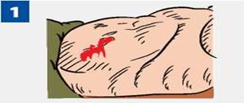
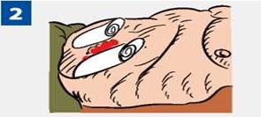
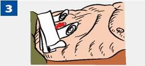
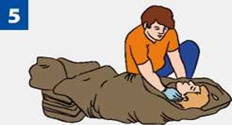

Нельзя вправлять выпавшие органы в брюшную полость.
Запрещено пить и есть!
Для утоления чувства жажды — смачивай губы.

Вокруг выпавших органов положи валик из марлевых бинтов (защити выпавшие внутренние органы).

Поверх валиков наложи повязку. Не прижимая выпавшие органы, прибинтуй повязку к животу.

Наложи холод на повязку.

Защити пострадавшего от переохлаждения. Укутай теплыми одеялами, одеждой.